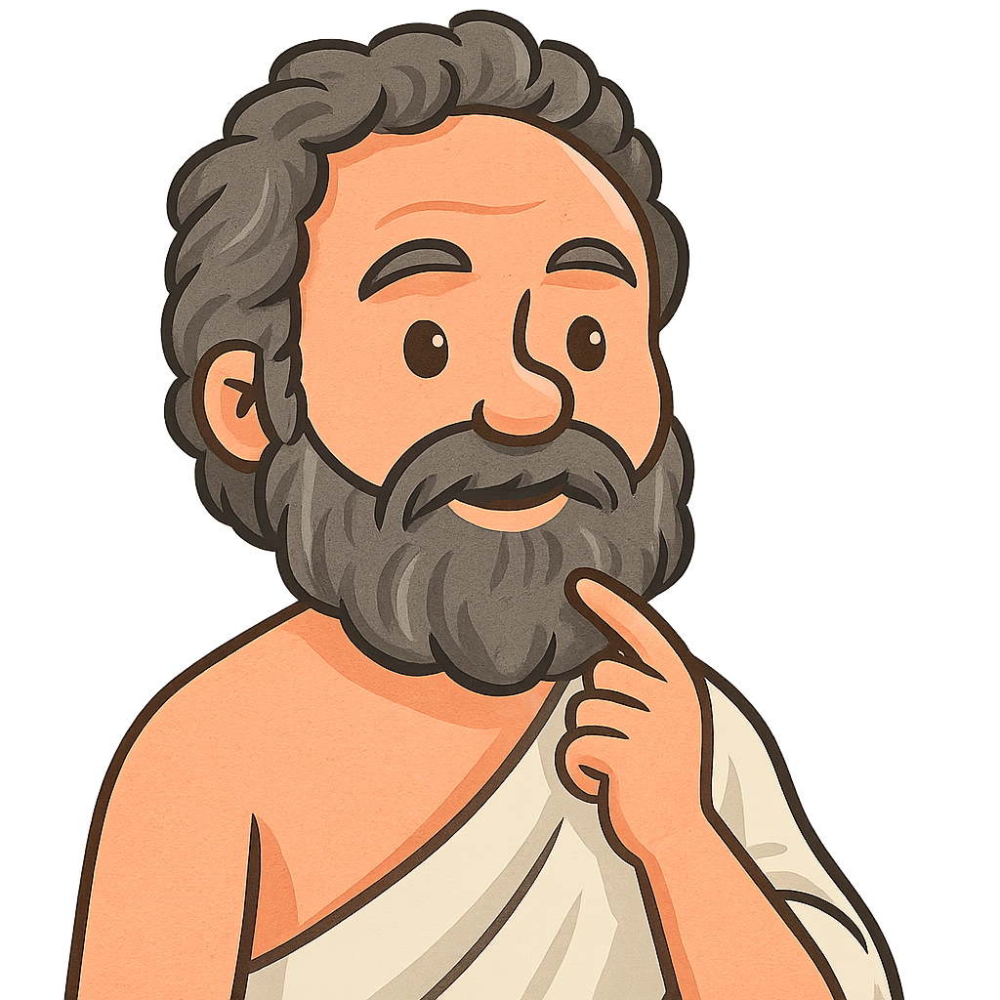

AI Κριτής - Σωκράτης
Ένα φιλοσοφικό παιχνίδι επιχειρηματολογίας για παιδιά και μεγάλους.
🎮 Νέο Παιχνίδι
ℹ️ Πληροφορίες
🎮 Ρυθμίσεις Παιχνιδιού
Αριθμός Παικτών:
2
3
4
5
6
Αριθμός Γύρων:
1
2
3
4
5
Χρήση καρτών +30″
🚀 Έναρξη Παιχνιδιού
Αποστολή
—
Λ
Ενεργός Παίκτης:
—
Γύρος:
1
/
2
+30″
Επόμενος Παίκτης ⟶
Ελληνικά
English
🎙️ Ο Σωκράτης ακούει
⚖️ Βαθμολογία
🔊 Άκου τον Σωκράτη
⏳ Χρόνος:
1:30
Σχόλιο Σωκράτη:
—
Ανάλυση Βαθμολογίας:
—/10